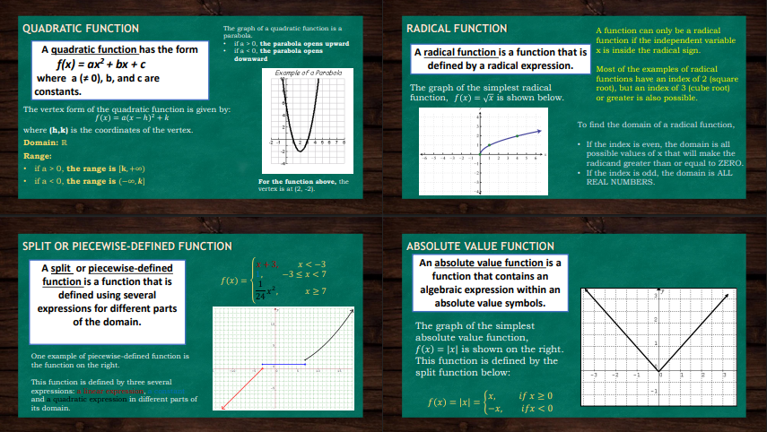

The image presents an overview of different types of functions and their graphs: Functions and Their Graphs: The image introduces the concept of functions and their corresponding graphs. Constant Function: A constant function is represented by the equation 𝑓 (𝑥)=𝑎 f(x)=a, where 𝑎 a is a non-zero constant. The graph of this function is a horizontal line, and it shows that for all values of 𝑥x, the function always returns the same value 𝑎 a. The domain is all real numbers (𝑅R), and the range is the constant value [𝑎][a]. Zero Function: The zero function is given by 𝑓(𝑥)=0 f(x)=0. It is a special case of a constant function where the output is always zero. Its graph is a horizontal line at 𝑦=0 y=0, with the domain being all real numbers (𝑅R) and the range being the single value {0}{0}. Linear Function: A linear function follows the equation 𝑓(𝑥)=𝑚𝑥+b f(x)=mx+b, where 𝑚 m is the slope and 𝑏 b is the y-intercept. The graph of a linear function is a straight line. The slope m determines the steepness of the line, and the y-intercept 𝑏 b represents the point where the line crosses the y-axis. The domain of a linear function is all real numbers (𝑅R), and its range is also all real numbers (𝑅R). This explanation provides a basic understanding of constant, zero, and linear functions with their respective graphs and domains/ranges.
This image continues the explanation of different types of functions, each with its characteristics and graphs: Quadratic Function: A quadratic function has the form 𝑓(𝑥)=a𝑥2+𝑏𝑥+𝑐f(x)=ax2+bx+c,whe≠ =0, and a, 𝑏 b, and 𝑐 c are constants. The graph of a quadratic function is a parabola. If 𝑎>0 a>0, the parabola opens upwards; if 𝑎<0 a<0, it opens downwards. The vertex of the parabola is given by the formula 𝑓(𝑥)=𝑎(𝑥−ℎ)2+𝑘 f(x)=a(x−h)2 +k, where (ℎ,𝑘) (h,k) are the coordinates of the vertex. The domain of a quadratic function is all real numbers (𝑅R), and its range depends on the direction in which the parabola opens. Radical Function: A radical function is defined by a radical expression, such as 𝑓(𝑥=𝑥f(x)=x . The graph of a simple radical function, like the square root function, is shown as a curve that starts from the origin and increases slowly. The domain of a radical function depends on the index of the radical. For square roots, the domain includes all values of 𝑥 x that make the expression under the root non-negative. Split or Piecewise-Defined Function: A piecewise function is defined by different expressions for different parts of the domain. For example, the function 𝑓(𝑥)={𝑥2} for 𝑥<02𝑥 for 𝑥≥0f(x)={x22x} for x<0 for x≥0 uses different formulas based on the value of 𝑥 x. The graph of a piecewise function often has different segments, which may be continuous or discontinuous, depending on the expressions involved. Absolute Value Function: An absolute value function is defined as 𝑓(x)=∣𝑥∣ f(x)=∣x∣, where ∣𝑥∣ ∣x∣ represents the absolute value of 𝑥 x. The graph of this function is a V-shaped curve, where the function behaves differently for positive and negative values of 𝑥 x. The absolute value function can be written in piecewise form as: 𝑓(𝑥)={𝑥 if 𝑥0 −𝑥 if x<0f(x)={x−x if x≥0 if x<0 The domain of an absolute value function is all real numbers, and its range is non-negative values. These explanations provide insights into quadratic, radical, piecewise, and absolute value functions, with graphs showing their respective shapes and behaviors.

The image explains the Greatest Integer Function, also known as the Floor Function.
A greatest integer function is defined as 𝑓(𝑥)=⌊𝑥⌋
f(x)=⌊x⌋, where ⌊𝑥⌋
⌊x⌋ represents the greatest integer less than or equal to
𝑥
x. In other words, for any real number 𝑥
x, the greatest integer function rounds x
x down to the nearest whole number.
The notation ⌊𝑥}=𝑛
⌊x⌋=n means that 𝑛
n is the largest integer such that 𝑛≤𝑥<𝑛+1n≤x